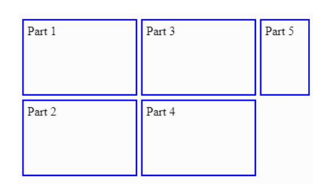

So far, we have been explicitly defining the dimensions and quantities of our grid elements using various properties. This works well in many cases, such as a landing page for a business that will display a specific amount of information at all times.
However, there are instances in which we don't know how much information we're going to display. For example, consider online shopping. Often, these web pages include the option at the bottom of the search results to display a certain quantity of results or to display ALL results on a single page. When displaying all results, the web developer can't know in advance how many elements will be in the search results each time.
What happens if the developer has specified a 3-column, 5-row grid (for a total of 15 items), but the search results return 30?
Something called the implicit grid takes over. The implicit grid is an algorithm built into the specification for CSS Grid that determines default behavior for the placement of elements when there are more than fit into the grid specified by the CSS.
The default behavior of the implicit grid is as follows: items fill up rows first, adding new rows as necessary. New grid rows will only be tall enough to contain the content within them. In the next exercise, you'll learn how to change this default behavior.
grid-auto-rows and grid-auto-columns accept the
same values as their explicit counterparts,
grid-template-rows and grid-template-columns:
px)%)fr)repeat() functionLets look at the example below:
<body>
<div>Part 1</div>
<div>Part 2</div>
<div>Part 3</div>
<div>Part 4</div>
<div>Part 5</div>
</body>
body {
display: grid;
grid: repeat(2, 100px) / repeat(2, 150px);
grid-auto-rows: 50px;
}
In the example above, there are 5 <div>s. However, in
the body ruleset, we only specify a 2-row, 2-column grid —
four grid cells.
The fifth <div> will be added to an implicit row that
will be 50 pixels tall.
If we did not specify grid-auto-rows, the rows would be
auto-adjusted to the height of the content of the grid items.
In addition to setting the dimensions of implicitly-added rows and columns, we can specify the order in which they are rendered.
grid-auto-flow specifies whether new elements should be added
to rows or columns, and is declared on grid containers.
grid-auto-flow accepts these values:
row — specifies the new elements should fill rows from left
to right and create new rows when there are too many elements (default)
column — specifies the new elements should fill columns
from top to bottom and create new columns when there are too many
elements
dense — this keyword invokes an
algorithm that attempts to fill holes earlier in the
grid layout if smaller elements are added
You can pair row or column with
dense, like this: grid-auto-flow: row dense;.
<body>
<div class='box'>Part 1</div>
<div class='box'>Part 2</div>
<div class='box'>Part 3</div>
<div class='box'>Part 4</div>
<div class='box'>Part 5</div>
</body>
body {
display: grid;
gap: 5px;
grid: repeat(2, 100px) / repeat(2, 150px);
grid-auto-rows: 45px;
grid-auto-columns: 65px;
grid-auto-flow: column;
}

The fifth grid item is added to a new, implicit column. The width of this
implicit column is dictated by grid-auto-columns, making the
fifth item 65px wide — narrower than the other grid items.